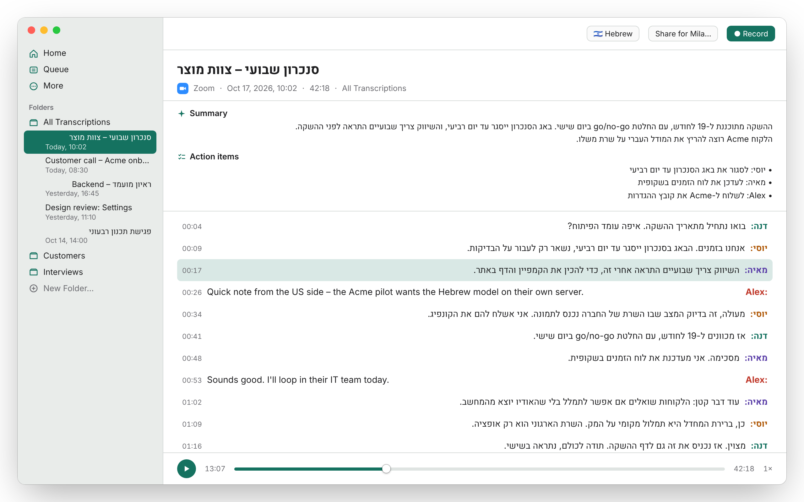

עברית English
Hebrew and English transcription
for your Mac.
Mila records your meetings, dictation and voice memos and turns them into text in Hebrew and English. It runs on your Mac, or on your company's own server. Your audio never goes to a third party.
תמלול בעברית ובאנגלית, על המק שלך או על השרתים של הארגון.
Download for Mac
Made for Hebrew. Just as good in English.
Most transcription tools treat Hebrew as an afterthought. Mila was built for teams that talk in both languages every day.
-
עברית Hebrew
- The ivrit.ai
large-v3model, trained on Hebrew speech - Right-to-left transcripts, summaries and action items
- ⌘3 dictates Hebrew into any app
- The ivrit.ai
-
English
- OpenAI's Whisper
large-v3-turbo - Speaker labels, live transcript and summaries
- ⌘2 dictates English into any app
- OpenAI's Whisper
Pick the language per recording from the toolbar. Both models download on first launch and run on the Mac, or on your server.
Everything happens on your Mac
No account and no subscription. By default Mila runs Whisper on the Mac's own GPU and nothing is uploaded.
-
On-device transcription
Whisper runs through whisper.cpp on Apple's Metal GPU. No internet needed once the models are downloaded.
-
Record any meeting
Capture Zoom, Google Meet in Chrome, Slack or another app together with your microphone. No virtual audio device to install.
-
Know who said what
Speaker diarization labels each voice. Name a speaker once and Mila keeps the name for later recordings. Needs an Apple Silicon Mac.
-
Live transcript
Watch the transcript appear while the meeting is still going, on Macs fast enough to keep up in real time.
-
Dictate anywhere
Press ⌘2 for English or ⌘3 for Hebrew, speak, and the text is pasted where your cursor is. Both shortcuts can be changed.
-
Works with your AI tools
Ask Claude about your meetings through Mila's built-in MCP server, or get titles and summaries from the AI tool you already use. Both stay off until you turn them on.
-
Share with a colleague
Send one
.milasharefile with the audio, transcript, speaker names and summary. It opens straight into their Mila. -
iPhone voice memos
Voice Memos synced from your iPhone are transcribed automatically. Export subtitles as SRT, or copy the text anywhere.
For companies
Your own transcription service, on-prem
Run Mila's transcription on every Mac, or on your company's own GPU servers. Either way, recordings stay inside your organization. No vendor, no per-seat or per-minute fees.
-
Option 1
On each Mac
Apple Silicon Macs transcribe locally. Nothing to deploy, and audio never leaves the laptop.
-
Option 2
On your company's server
Run one transcription server for the whole company. Every Mila sends audio to it instead of a cloud service. Faster on older Macs, same Hebrew and English models.
- Ready to deploy. Kubernetes manifests for a speaches server on a single GPU node, a Docker image with the ivrit.ai Hebrew model built in, and a single-machine quickstart.
- Works with what you have. Any OpenAI-compatible
/v1/audio/transcriptionsendpoint will do. - Roll out with MDM. Push the server address and settings to every Mac through Jamf, Kandji, Intune or any MDM. Managed settings are locked in the app.
- Or one file. Hand a teammate a
.milaconfig. Double-click it and Mila is set up. - Open source, Apache 2.0. Read the code, run it yourself, no license fees.
{
"version": 1,
"remoteTranscription": {
"enabled": true,
"endpoint": "https://mila-asr.your-org.example/v1",
"model": "ivrit-ai/whisper-large-v3-turbo-ct2",
"englishModel": "deepdml/faster-whisper-large-v3-turbo-ct2",
"apiKey": "YOUR_API_KEY_HERE"
},
"recordingLanguage": "he"
}From example.milaconfig: model serves Hebrew, englishModel serves English. An MDM profile takes the same keys.
System requirements
- macOS
- macOS 14 Sonoma or later.
- Mac
- Apple Silicon (M-series) strongly recommended. Intel Macs can transcribe, on the CPU and much more slowly, but speaker labels and voice recognition need Apple Silicon.
- Memory
- 16 GB recommended. 8 GB is workable for plain transcription.
- Disk
- About 4.6 GB for the English and Hebrew models, downloaded on first launch. About 1 GB more for speaker labels.